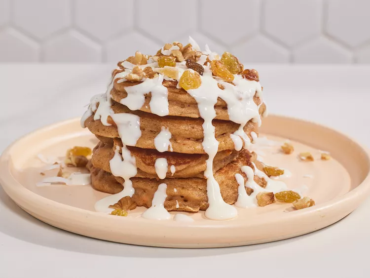

Carrot Cake Pancakes

Description
How does "cake for breakfast" sound? The spices in these pancakes take you right to _
the flavors of a carrot cake. They are drizzled with a thin frosting and topped with _
raisins, coconut flakes, nuts, and candied ginger.
Ingriedents
Pancakes
- 1 ¼ cups all-purpose flour
- 1 ½ teaspoons baking powder
- 1 teaspoon ground cinnamon
- ½ teaspoon pumpkin pie spice
- ½ teaspoon baking soda
- ¼ teaspoon table salt
- 1 cup whole buttermilk
- ¼ cup packed light brown sugar
- 1 large egg
- 1 teaspoon vanilla extract
- ¾ cup finely grated carrot
- 3 tablespoons unsalted butter, melted, plus more for griddle
Frosting
- 3 ounces cream cheese, softened
- 1 tablespoon whole milk
- 2 tablespoons powdered sugar
- ½ teaspoon vanilla extract
Topping
- 3 tablespoons golden raisins
- 3 tablespoons toasted chopped pecans or walnuts
- 3 tablespoons toasted unsweetened coconut flakes
- 1 tablespoon finely chopped candied ginger (Optional)